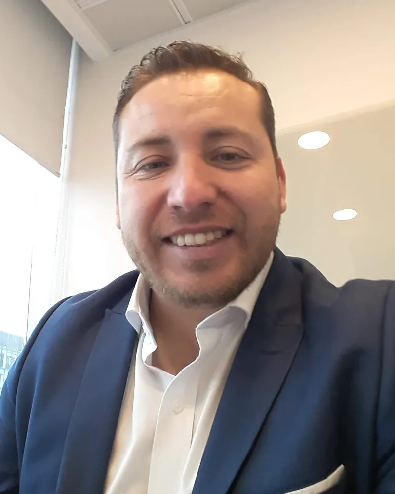
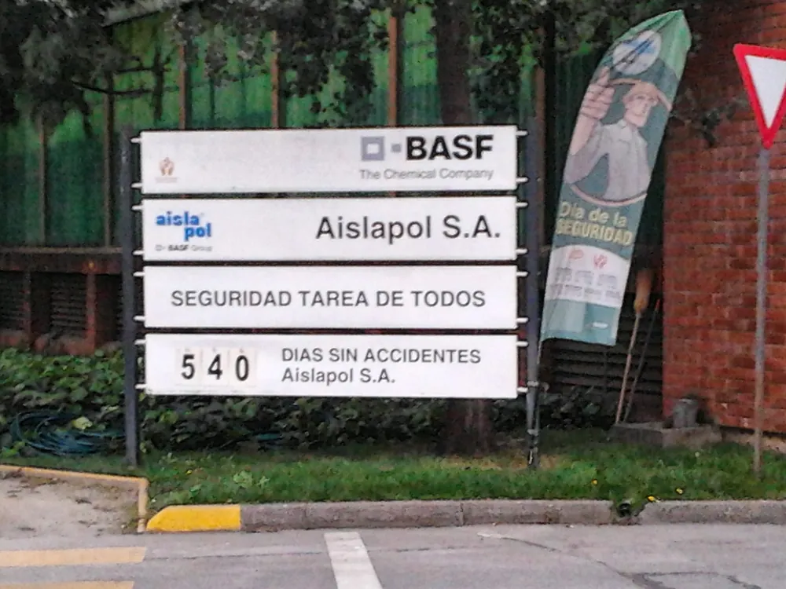

Difusión, formación, liderazgo y medidas organizacionales, respetando los procedimientos legales.
Inicio › Mi historia
Mi historia
Del héroe sin capa al ave fénix
Durante años protegí a otros. Hasta que la vida me enseñó que también tenía que aprender a cuidarme.

El héroe sin capa
Soy Hans Meneses, prevencionista, coach y consultor en prevención de riesgos, liderazgo y cultura preventiva, con más de 20 años de experiencia.
Durante mucho tiempo me vi como un héroe sin capa. Mi pega era proteger vidas, anticiparme a los peligros y lograr que cada persona volviera sana a su casa. Lo hacía con convicción y con una exigencia brutal.
Hasta que descubrí una verdad incómoda: podía cuidar a todos y, al mismo tiempo, dejar de cuidar lo esencial de mi propia vida. Penca, pero real.
BASF: la prevención tenía que ir más allá
En BASF enfrenté el desafío que marcó mi carrera: avanzar hacia el cero accidentes. Y aprendí que no basta con procedimientos, capacitaciones ni carpetas. Si los líderes no se involucran y los hábitos no cambian, el papel no protege a nadie.
Hicimos cosas concretas: tolerancia cero frente a riesgos críticos, rondas inspectivas, evidencias visuales, seguimiento riguroso y planes de acción con pocas prioridades, pero bien definidas. La seguridad entró en las decisiones de todos los niveles, desde quien ejecutaba la tarea hasta la gerencia y la dirección corporativa.
Resultado: más de tres años sin accidentes. Rompimos el récord del tablero: cuatro dígitos.
Esa experiencia es parte de mi sello: con prioridades claras, liderazgo, controles y seguimiento constante, los resultados se sostienen.

Mutual de Seguridad: el otro lado de la mesa
Después llegué a una mutualidad como asesor, director de cuenta y consultor de riesgos. Conocí más de 300 pymes por dentro, conversé con sus dueños y gerencias y vi cómo se evalúa a una empresa cuando las cosas salen mal.
Pero mientras aprendía a proteger a otros, me quedaba la lección más personal de todas.
El quiebre
Durante años puse casi toda mi energía en trabajar, responder y proveer. Sin darme cuenta, el trabajo se comió espacios que necesitaban mi presencia, mi tiempo y mi atención.
Después llegó un despido masivo, el quiebre de mi matrimonio y relaciones que me obligaron a mirarme de verdad. No fue solo un problema laboral o personal: fue el derrumbe de mi forma de entender la vida y mi identidad.
Dejé de preguntarme quién tenía la culpa y empecé a preguntarme qué tenía que reconocer y transformar en mí.
La noche más oscura del alma
Decidí hacer un proceso de transformación profundo, con la misma determinación con la que enfrentaba los desafíos de seguridad. Coaching, exploración emocional, respiración consciente, meditación, PNL y otras prácticas de bienestar. Revisé mis patrones, mis relaciones, mis creencias y mis decisiones.
No fue mágico ni de un día para otro. Hubo que mirar lo incómodo, asumir mi parte y dejar de esconderme detrás del trabajo y de los logros. Cambiar no es negar lo vivido ni cargar con toda la culpa: es reconocer lo que te corresponde, aprender y decidir qué vas a hacer distinto.
Ahí la imagen del ave fénix se volvió real. No se trataba de volver a ser el mismo. Se trataba de renacer con más conciencia.
De mi proceso al servicio
Lo que aprendí despertó las ganas de acompañar a otros. Empecé a guiar procesos de bienestar y transformación personal, con las herramientas que estudié y practiqué. Conocí historias muy duras y aprendí que cada persona es distinta y que no hay una técnica que lo resuelva todo.
No atribuyo a mis herramientas la curación de enfermedades ni prometo resultados que no se pueden garantizar. Acompaño procesos de autoconocimiento y bienestar, y respeto siempre la necesidad de atención médica o psicológica cuando corresponde.
SafetyCoach renace
Hoy llevo todo esto a una nueva etapa de SafetyCoach. Conservo la base de dos décadas: prevención de riesgos, gestión, experiencia con empresas y la convicción de que los resultados salen de acciones concretas y sostenidas. Y le sumo una mirada más profunda sobre las personas, el liderazgo, la comunicación y los factores humanos.
No basta con diseñar un buen sistema. Hay que lograr que funcione en la realidad, que los responsables se involucren y que las medidas se mantengan. No vendo soluciones mágicas. La prevención no cambia de la noche a la mañana: requiere método, compromiso, seguimiento y mejora continua.
Yo Puedo Sanarme
En paralelo, a través de Yo Puedo Sanarme desarrollo mi faceta de coach de bienestar: acompaño procesos de autoconocimiento, exploración emocional y transformación personal. SafetyCoach trabaja con empresas; Yo Puedo Sanarme, con personas. Los dos nacen del mismo propósito.
El ave fénix
No reniego del profesional que fui, ni de mis errores, mis logros o lo que me trajo hasta aquí. Lo integro todo. Ya no quiero ser el héroe sin capa que protege a todos mientras se olvida de sí mismo.
Soy Hans Meneses. No comienzo desde cero: renazco con todo lo aprendido.
SafetyCoach: experiencia que protege, liderazgo que transforma y prevención que se sostiene.
Para tu empresa
La prevención también se construye en las relaciones humanas
Los conflictos, la mala comunicación y los roles poco claros desgastan el clima y a los equipos. Si no los abordas a tiempo, terminan en licencias, denuncias o gente que se va.
Herramientas para reconocer tensiones, facilitar conversaciones y resolver desacuerdos.
Autoconocimiento y estilos de comunicación. Herramienta de exploración, no diagnóstico psicológico.
Expectativas claras, retroalimentación y relaciones laborales más sanas.
Acciones complementarias para entornos saludables y medidas preventivas.
Estas actividades complementan, pero no reemplazan, la evaluación de riesgos psicosociales, las medidas organizacionales exigibles ni los procedimientos formales que establece la normativa.
¿Hacemos match?
Yo elijo con quién trabajo. Si tú también eliges hacerlo distinto, conversemos.